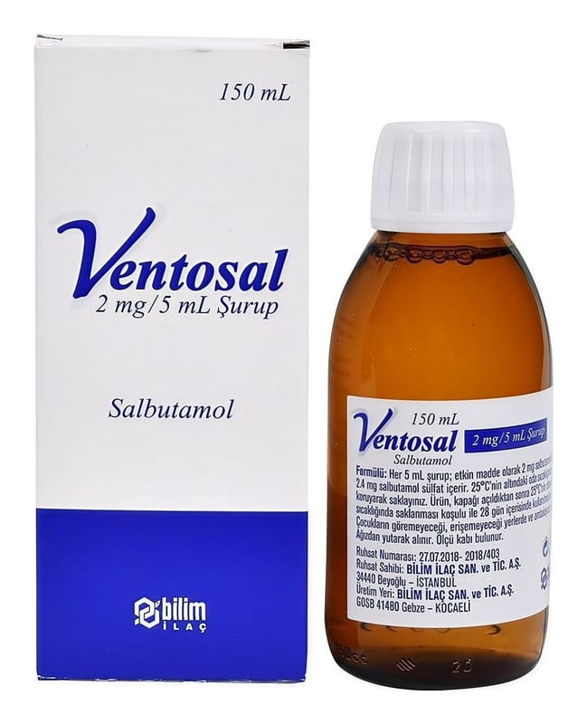

Ventosal 2 mg/5 ml Şurup, 150 ml

Ne için kullanılır
KT · Bölüm 1VENTOSAL, “selektif beta
adrenerjik reseptör agonistleri” adı verilen ilaç grubunun bir üyesidir. Etkin madde olarak salbutamol içerir ve akciğerlerdeki hava yollarını genişleterek daha kolay nefes alıp vermenizi sağlar.
VENTOSAL berrak, renksiz, partikül içermeyen, portakal aroma kokulu, homojen çözelti halinde karton kutu içinde, 150 mL’lik şişede bulunur.
• Astımda semptom giderici olarak kullanılan rahatlatıcı ilaçlardır. • Kontrol edici ilaç olarak kullanılmamalıdırlar. • Kronik obstrüktif (tıkayıcı) akciğer hastalığında (KOAH) belirtileri azaltmak için ve kurtarıcı ilaç olarak kullanılır. Düzenli tedavide tercih edilmez.